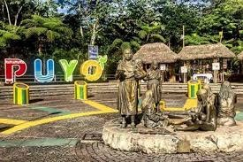
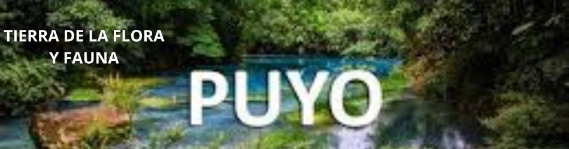

(Puyo, Pastaza).- Pastaza, es el cantón más extenso
delpaís, reconocido como plurinacional y multiétnico por ser
guardián del legado ancestral y la cosmovisión histórica
deseis nacionalidades indígenas de la Amazonía: Kichwa,
Achuar,
Shuar, Zapara, Shiwiar y Andoa.
Puyo, capital de Pastaza, ubicada en la puerta de la Amazonía ecuatoriana tiene una excelente conectividad con el resto del país; desde Quito se puede llegar por la vía Ambato – Baños – Puyo o por la vía Papallacta – Tena. Desde Guayaquil se puede tomar la vía Riobamba – Baños – Puyo y también se puede llegar desde Cuenca por la vía Gualaceo – Macas – Puyo.
Puyo se ha convertido en un destino de gran interés para los viajeros, ya que posee una oferta turística al aire libre y en contacto con la naturaleza, donde es posible refrescarse en grandes cascadas, divertirse en columpios gigantes, observar animales en su hábitat, caminar con el sonido de la selva, practicar rafting, kayac, tubbing, canyoning y navegar por ríos cristalinos.
  costrumnbre galeria